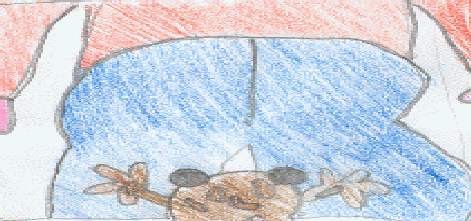
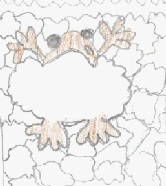
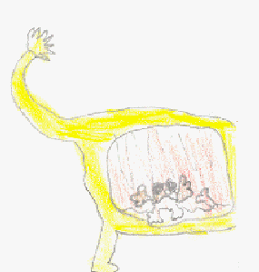

by John Michael Howe (05/11/2001)
Hopper was in his house, and he had just heard that the circus was coming to town !
He bought some tickets and went.
He was very excited - he hopped into his seat and got settled in.
Then a person was going to sit on him ...

He quickly did a super hop and jumped into the circus ring.
Suddenly the lights turned on and some clowns came out.
Their giant feet almost squished Hopper.
Hopper ran everwhere, but the clowns were always nearly stamping on him.
Then he did another super hop. and landed in a bag of popcorn ...

It was heaven for him - not the popcorn - the flys were delicious, YUM !!!
Then someone picked him up and threw him back into the ring !
Then a lion and a lion tamer came out, and the lion ate Hopper !
Hopper was in the lion's tummy ...

and he had just thought of an idea.
He then started to hop up and down, and that made the lion burp, and Hopper flew out of his mouth, and the circus, then he crash landed in his house, and started to eat his tea, and thinking "who is going to fix the roof ?"
The End